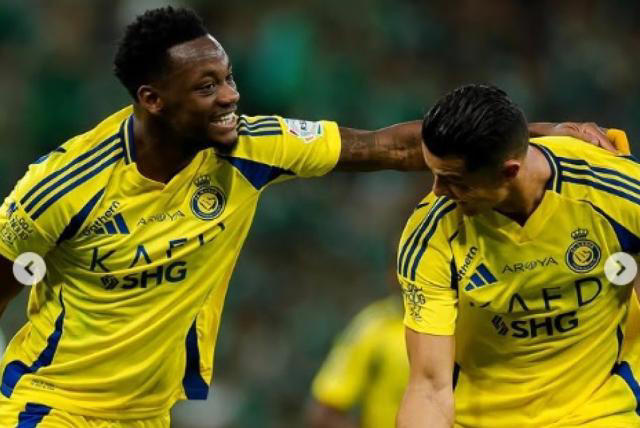
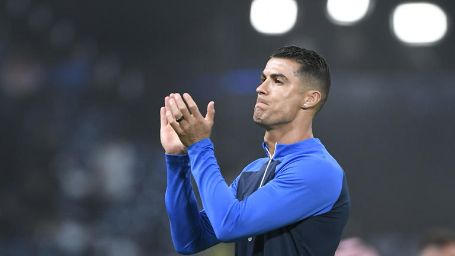

El cuadro de Jhon Jader Durán se mide a un rival directo en la liga.
Al Nassr se quedó con el derby de Riad ante Al Hilal que se disputó este viernes por la fecha 26 de la Saudi Pro League en el Kingdom Arena. El cuadro visitante comenzó ganando con un bombazo al arco de Ali Al Hassan y luego ya en el segundo tiempo aumentaron la cuenta con Cristiano Ronaldo con un zurdazo potente.Tras varios minutos, Al Hilal encontró el descuento en una pelota quieta que mandó a guardar Ali Al Bulayhi, pero Cristiano liquidó todo con un cobro de penalti que fue provocado por el colombiano Jhon Jader Durán.
Ali Al Hassan (0-1) Minuto 45+3
Cristiano Ronaldo (0-2) - Minuto 47
Ali Al Bulayhi (1-2) - Minuto 64
Cristiano Ronaldo (1-3) - Minuto 85

El delantero portugués Cristiano Ronaldo volvió a dar una clase de efectividad y liderazgo, al marcar dos goles en la victoria 3-1 del Al Nassr sobre el Al Hilal en la Liga de Arabia Saudita este viernes.
Con ese doblete, CR7 no solo guio a su equipo en una victoria clave por el liderato, sino que alcanzó su 15ª temporada anotando al menos 20 goles en liga, según reportó BleacherReport.
Ronaldo abrió su cuenta al minuto 47, justo cuando arrancaba el segundo tiempo. Con la intuición que lo caracteriza, el luso encontró un hueco en el área y fusiló al arquero marroquí Bono.
Más tarde, al minuto 88, selló su doblete desde el punto penal, con un disparo potente que dejó sin opciones al guardameta rival. Fue el golpe definitivo para un partido en el que Al Nassr mostró oficio y pegada.